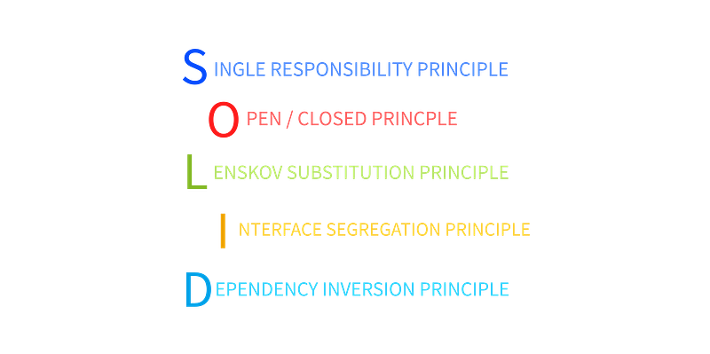

Apart from the principles discussed in the article 3 basic software principles you must know, there are thousands of software principles out there which makes it practically impossible for a software developer to go through each and every principle and make sure that every rule is being followed as mentioned.
So I have handpicked a set of some advanced software principles using my experience with various technologies which might help you write a robust, flexible, scalable and reliable software solution. Lets discuss each of them in detail.
SOLID
A set of software design principles establish practices that lend to developing software with considerations for maintaining and extending as the project grows. SOLID is a meta acronym where each letter corresponds to another acronym mentioned below.

SINGLE RESPONSIBILITY PRINCIPLE
Single Responsibility Principle (SRP) states the every entity in the code should handle only one responsibility. A program entity can be a function, block, class, package or module. SRP is based on the idea of separation of concerns.
Responsibility can be defined as reason to change , and each entity should only have one reason to change. Implementing SRP may reduce complexity or even increase it by multifold because sometimes maintaining low coupling demands the code to have a complex structure but in the end, you will end up with a highly flexible and maintainable code base.
OPEN / CLOSED PRINCIPLE
Open closed principle states that a software entity should be closed to modifications but open to extensions. Modifications are necessary for evolution of the software but every modification in a stable build move the code base to instability. Hence entity should avoid modifications , rather evolution should progress on the basis of extension.
As the classes are compiled and stored in the library hence to avoid the restructuring and recompilation of code , it should be closed to any modification to avoid errors. Instead such classes can be extended as parents or via composition and aggregation for enhancements.
Interfaces are recommended to be used in order to implement open closed principle as they are inherently closed any modification as they lack implementation yet offers high degree of extension. Interfaces also have added advantage of offering low coupling.
An existing compiled class can be inherited with a new class overridden with the latest desired functionality reusing or replacing the legacy code. This new functionality can be used without any need of recompilation or modification of existing classes.
LENSKOV’S SUBSTITUTION PRINCIPLE
In 1987, Lenskov’s Substitution Principle was introduced by Barbara Liskov. According to this principle, a published paper by Jeanette Wing states that
Let Φ(x) be a property provable about objects x of type T. Then Φ(y)should be true for objects y of type S where S is a subtype of T.
In simple words, objects of a superclass shall be replaceable with objects of its subclasses without breaking the application. This is based on the principle of Behavioral Sub-typing.
Achieving clean substitution of the entities is not so easy as it sounds. Hence, some rule are mentioned in order to achieve a pure lenskov’s substitution.
There are 6 rules to check valid LSP
- Pre-condition Rule : Preceding condition of subtype should not be more restrictive than supertype
- Post-condition Rule : Trailing condition of subtype should not be less restrictive than supertype
- Covariance of Return Types (outputs) : Return types of the supertype should be more generic than the subtype
- Contra-variance of Methods Arguments (inputs) : Method arguments of subtype should be more generic than the subtype
- Invariance : In some cases , same type should be strictly used throughout
- No exception are allowed : No new exception should be thrown in the subtype which is not ther in supertype
INTERFACE SEGREGATION PRINCPLE
With an idealogy that no client should be forced to depend upon interfaces that they do not use, Interface segregation principle is introduced. This principle states that an composite interface should be decomposed into multiple interfaces with dedicated context such that a class only implements the interfaces which are required by it.
As per my experience, this rule is often violated by even the experienced developer not because they deliberately want to develop a bad software but due to enhancement requests made by the client or the project stakeholders which were not mentioned while designing the software. Interface segregation principle helps to write robust and maintainable applications.
DEPENDENCY INVERSION PRINCIPLE
Sometime the modules with much complex structure (such as business logic handlers) get affected by the updation performed in the modules at much lower level (such as utility classes). This scenario can haunt a developer if the application needs frequent modifications.
Hence, SOLID provides the last principle named as Dependency Inversion Principle. This principle solved the above mentioned issue by making sure that the high level modules and the low level modules should never be dependent on each other.
According the famous author Robert Martin, Dependency Inversion Principle is based on two key points mentioned below
- High-level modules should not depend on low-level modules. Both should depend on abstractions.
- Abstractions should not depend on details. Details should depend on abstractions.
It can be achieved using smart implementation of interfaces. Interfaces can introduced amount the HLC (High Level Components) and LLC (High Level Components) which decouples them and allow each other to evolving in separation without breaking the application.
Implementing this rule can drastically decrease the degree of coupling between the modules and makes the code high flexible such that updations in at a certain modular level can be performed without affecting other modules
PACKAGE & COMPONENT DESIGN PRINCIPLES
Just like SOLID principles, there are set of useful principles for developing a package & component based software design. These principles are like a version of SOLID principles with a granular focus, as the name implies, and are quite helpful in keeping software components well defined.
Such principles can be broadly classified as
- Principles of Component Cohesion, which focus on the granularity of components and help the developer partition classes into components, and
- Principles of Component Coupling, which focus on the stability and relationships between the components.
1. PRINCIPLES OF COMPONENT COHESION
REP
Reuse Release Equivalence Principle (REP) states that any component that can be reusable in nature should be releasable too. If a component is reused by creating copies then each copy holds a good probability of gradually diverging from each other with time as all the copies share the responsibility to capture the upgrades.
If a component is designed such that it can releasable then problem of producing assymetric multiple copies can be eliminated as the source code of a particular functionality is present at just one place. For example, writing a module having an effective caching algorithm and reusing it everywhere via importing the module.
CRP
CRP stands for Common Reuse Component Principle which means that if a class belonging to a component is reused, then all the classes of that component should be reused directly or indirectly. Highly cohesive component will inherently supports the CRP.
CCP
CCP stands for Common Closure Principle which says that a change which affects a component affects all the classes in that component and no other components. This prevents the component from breaking or getting some classes of component outdated while others are advancing with need of time.
2. PRINCIPLES OF COMPONENT COUPLING
SAP
Abstraction is a key principle in many software patterns which actually means hiding the sensitive information from outside world and revealing only the relevant infromation. Good abstraction offers access protection, dependency inversion, standardisation and variation protection etc. Stability is also offered by abstraction directly or indirectly as it keeps the code dependent on abstraction rather than concrete data.
Stable Abstraction Principle (SAP) states that stability of a package/component is directly proportional to degree of abstraction. A more stable package should be more guarded from side effects of extension which can be achieved by abstraction.
SDP
SDP stands for Stable Dependency Principle. According SDP, dependencies should always made in direction to higher stability. In simple words, a component should always be dependent on such a component which is greater or at least equally stable in comparison to itself.
By conforming to Stable Dependency Principle, we ensure that modules that are intended to be easy to change are not depended on by modules that are more difficult to change than they are.
CONCLUSION
Concluding in a nutshell, a developer should try to follow as many principles as possible and should give preference to these principles according to the need of the project and based on the nature of technology used for that project while writing a high quality software.
“ Software principles are widely acceptable guidelines which should be followed in order to ensure quality and viability yet one should never forget that the aim of software development is not to stick to these principles religiously but to use them in order to build a robust, reliable , flexible, scalable and manageable softwares. “